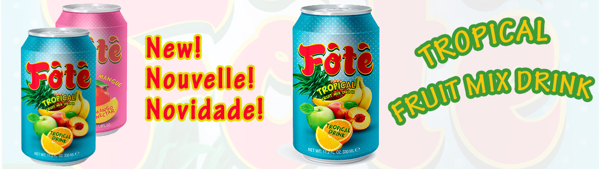
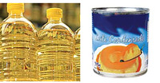
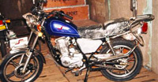

Import & Export depuis 2004
Des produits de qualité, de l'Afrique vers le monde
Fote Import & Export relie le Portugal, la Guinée-Bissau et la Guinée-Conakry autour de boissons, produits alimentaires et biens industriels de confiance.

20+
ans d'expérience, depuis 2004
3
pays d'implantation
2011
naissance de la marque Fote
Ce que nous faisons
Trois métiers, une même exigence de qualité.
Boissons
Notre propre marque de jus Fote, ainsi que la distribution officielle d'ESTAR Energy Drink en Afrique de l'Ouest.

Produits alimentaires
Farine, huile de cuisine, lait condensé et lait en poudre, sélectionnés pour la clientèle africaine et internationale.

Industriel & mobilité
Motocyclettes, plaques de zinc et cartouches, importés pour équiper les marchés locaux.
Notre marque
Fote, la saveur tropicale qui monte
Lancée en 2013, Fote est notre marque propre de jus de fruits — testée en usines certifiées et pensée pour conquérir l'Afrique avant l'Europe.
Découvrir la marque Fote

Actualités
Ce qui bouge chez Fote Import & Export.
Lancement de Fote Juice
Notre marque propre de jus de fruits voit le jour, avec l'ambition de devenir une référence en Afrique de l'Ouest.
Fote Tropical Juice
Un nouveau mélange de fruits tropicaux vient enrichir la gamme Fote, aux côtés de Fote Mango.
Envie de travailler avec nous ?
Que vous soyez distributeur, revendeur ou partenaire potentiel, parlons de votre projet.
Contactez l'équipe Fote